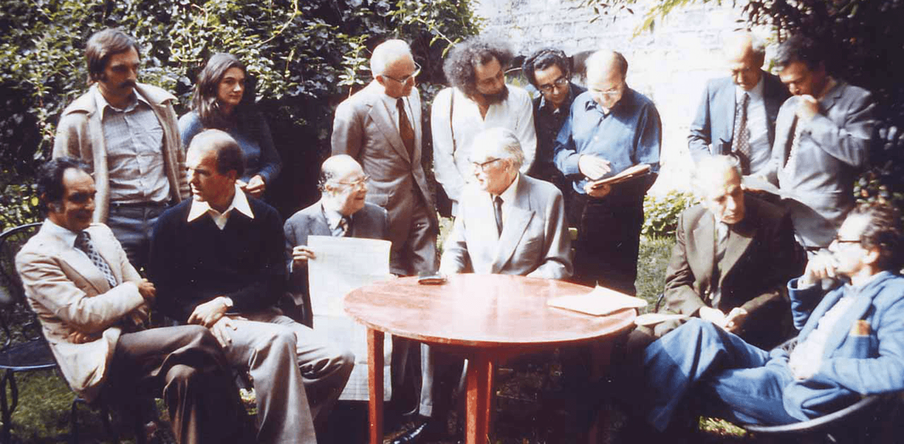

The Project
eXtreme Design a Brief Introduction
Ontology Design Patterns are building blocks for ontologies. They offer answers to common modeling problems. Their use favors the ontology's reusability and ensures a high degree of overall ontology quality.
Reusing ODPs is a basic concept and explicit action of the ontology design process known as eXtreme Design (XD). Following the start of the project, XD is carried out by repeating a series of steps:
- Gathering the requirements that serve as the basis for design and testing;
- Locating and implementing the ODPs that best meet the requirements;
- Conducting tests and validating the produced ontology components;
- Taking care of component integration.
1.Requirements Engineering
User stories lead to requirements collection. A user story is a series of phrases that illustrates the types of facts that the final knowledge graph must encode.
User stories can have a priority level, a title, and an ID attached to them. The title or ID can be used to describe potential narrative dependencies, which means that the analysis of one tale is dependent upon the analysis of other stories. The order in which stories are handled depends on their priority level.
2.Competency Questons (CQ)
To generalize a user narrative is to determine the key ideas it illustrates. Generalizing the user stories yields one or more competency questions (CQs). CQs are the natural language versions of the queries applicable to the resulting knowledge graph.
Along with CQs, it is possible to identify general constraints that may express possible inferences or other rules that apply to the story concepts. General constraints expressed in natural language correspond to formal axioms the ontology will include.
3. Matching CQs to ODPs
Matching CQs to Ontology Design Patterns (ODPs) is a crucial step in XD. A cohesive group of CQs, or CQs dealing with the same modeling difficulties (e.g. material transformation), is chosen at each iteration.
The analysis of potential existing ODPs identifies the best candidate for ontology implementation. They may be found in catalogs like the ODP portal and the University of Manchester's catalog. When an ODP is correctly specified and documented, it provides the corresponding competency questions that fully characterize the modeling issue it solves.
A designer can determine if an ODP fits the available CQs by contrasting them with the ODP's CQs. ODP's CQs are frequently broader than an ontology project's domain-specific CQs. In this situation, the designer will broaden CQs further to determine whether the candidate ODP may be reused given a vocabulary specialization.
4. Testing and Integration
The XD development process is test-driven and unit tested. In order to construct sample triples that are expected to either result in consistency/coherence problems or inferences, generic constraints are employed to transform CQs into potential SPARQL queries. Unit tests consist of OWL/RDF files and SPARQL queries that are annotated with the intended outcomes.
Our “story” is the description of the story-making machine.
First Step the Knight’s Move
Text
The novel unfolds on a 10x10 grid, where each square (cell) is a place and a chapter. Each chapter tells the story of a main character. The sequence of the cells is predefined and based on the chess knight piece move, with the requirement that it cannot step two times on the same cell.
Cell A1 is skipped.
Competency Questions
- What is the starting cell? (F5) (=What cell has no prev cell?)
- What place is described in chapter 1?
- What is the ending cell? (A5) (=What cell has no next cell?)
- What place does the last chapter describe?
- What cells have no corresponding chapter? (A1)
- What cell and chapter follow the position J7? I9, chapter 6 (= What is the next cell of a given cell?)
- What place is cell H8? (Winckler) (=What place corresponds to a specific cell?)
- What apartment follows chapter 25? Bartlebooth
Elements
Classes:
- Cells
- Chapters
- Topics
- Characters
- Places
Object Properties:
We expressed the property names in lowerCamelCase notation.
- hasCell
- hasChapter
- hasMainCharacter
- hasPlace
Data Properties:
- Chapter number
Generic Use Cases
For this step we identified the ODP “Sequence” from ontologydesignpatterns.org:
http://ontologydesignpatterns.org/wiki/Submissions:Sequence
Even if we have a connection between cells and chapters we can use to determine the sequence of cells (given that the sequence of chapters is incremental), we integrated this ontology for faster data extraction.